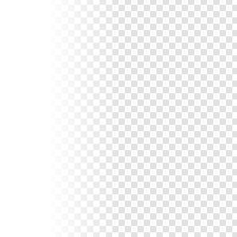

MaskedBlur QML Type
Applies a blur effect with a varying intesity. More...
| Import Statement: | import Qt5Compat.GraphicalEffects |
| Since: | QtGraphicalEffects 1.0 |
| Inherits: |
Properties
- cached : alias
- maskSource : alias
- radius : alias
- samples : alias
- source : alias
Detailed Description
MaskedBlur effect softens the image by blurring it. The intensity of the blur can be controlled for each pixel using maskSource so that some parts of the source are blurred more than others.
Performing blur live is a costly operation. Fullscreen gaussian blur with even a moderate number of samples will only run at 60 fps on highend graphics hardware.
| Source | MaskSource | Effect applied |
|---|---|---|
|  |

Note: This effect is available when running with OpenGL.
Example
The following example shows how to apply the effect.
import QtQuick import Qt5Compat.GraphicalEffects Item { width: 300 height: 300 Image { id: bug source: "images/bug.jpg" sourceSize: Qt.size(parent.width, parent.height) smooth: true visible: false } LinearGradient { id: mask anchors.fill: bug gradient: Gradient { GradientStop { position: 0.2; color: "#ffffffff" } GradientStop { position: 0.5; color: "#00ffffff" } } start: Qt.point(0, 0) end: Qt.point(300, 0) visible: false } MaskedBlur { anchors.fill: bug source: bug maskSource: mask radius: 16 samples: 24 } }
Property Documentation
cached : alias |
This property allows the effect output pixels to be cached in order to improve the rendering performance. Every time the source or effect properties are changed, the pixels in the cache must be updated. Memory consumption is increased, because an extra buffer of memory is required for storing the effect output.
It is recommended to disable the cache when the source or the effect properties are animated.
By default, the property is set to false.
maskSource : alias |
This property defines the item that is controlling the final intensity of the blur. The pixel alpha channel value from maskSource defines the actual blur radius that is going to be used for blurring the corresponding source pixel.
Opaque maskSource pixels produce blur with specified radius, while transparent pixels suppress the blur completely. Semitransparent maskSource pixels produce blur with a radius that is interpolated according to the pixel transparency level.
radius : alias |
This property defines the distance of the neighboring pixels which affect the blurring of an individual pixel. A larger radius increases the blur effect.
Depending on the radius value, value of the samples should be set to sufficiently large to ensure the visual quality.
The value ranges from 0.0 (no blur) to inf. By default, the property is set to 0.0 (no blur).
samples : alias |
This property defines how many samples are taken per pixel when blur calculation is done. Larger value produces better quality, but is slower to render.
Ideally, this value should be twice as large as the highest required radius value plus 1, for example, if the radius is animated between 0.0 and 4.0, samples should be set to 9.
By default, the property is set to 9.
This property is not intended to be animated. Changing this property may cause the underlying OpenGL shaders to be recompiled.
source : alias |
This property defines the source item that is going to be blurred.
Note: It is not supported to let the effect include itself, for instance by setting source to the effect's parent.